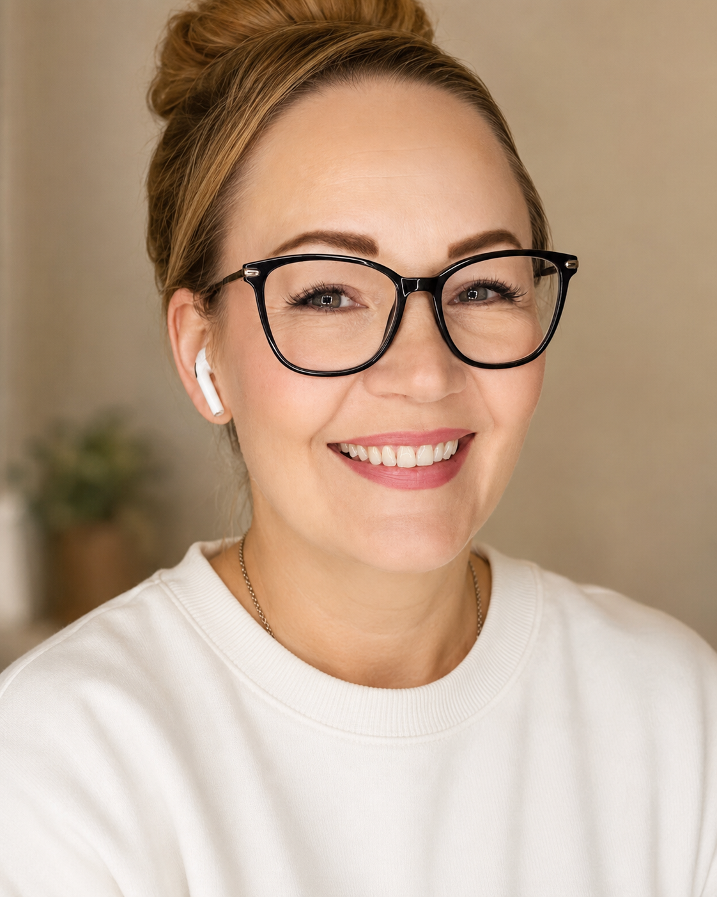

Kehittämisen, viestinnän ja ihmislähtöisen työn asiantuntija – sosiaalialan sydämellä, digitaalisen tekemisen käsillä.
Olen viestinnän, markkinoinnin ja ihmislähtöisen kehittämisen asiantuntija, jonka tausta yhdistää neurodiversiteettiosaamisen, sosiaalialan koulutuksen, yhteiskuntatieteen opinnot sekä käytännön kokemuksen sisällöntuotannosta, koulutusten rakentamisesta ja digitaalisista järjestelmistä.
Yli 5 vuotta monikanavaista viestintää ja markkinointia sosiaali- ja koulutusalan organisaatioissa – itsenäisesti, pienillä resursseilla.
Yli 10 vuotta lasten, nuorten ja perheiden parissa – varhaiskasvatuksesta lastensuojeluun ja neuropsykiatriseen valmennukseen.
Palvelumuotoilua, projektityötä, koulutusten rakentamista ja webinaareja. Käytännönläheinen ja tavoitesuuntainen ote.
Olen rakentanut näkyvyyttä pienillä resursseilla ja ilman suuria mainosbudjetteja. Nämä tulokset syntyneet laajan työnkuvan ohessa.
Monipuolinen kokonaisuus, jossa strateginen ajattelu, käytännön toteutus ja syvä ihmisymmärrys yhdistyvät.
Monikanavainen some – Facebook, Instagram, TikTok, LinkedIn, YouTube, Vimeo
Sähköpostimarkkinointi – Mailchimp, automaatiot, uutiskirjeet
Verkkosivut – WordPress, sisältörakenne, SEO-perusteet
Blogit – sisältöjä ihmisistä, arjesta ja työelämästä
Visuaalinen viestintä – kuvankäsittely, AI-kuvat, taittaminen, videot
Editointi – DaVinci Resolve, webinaarit, lyhytvideot
Analytiikka – GA4, Semrush
Maksettu mainonta – Meta Ads, Google Ads
Koulutusten tuotteistaminen – webinaarit, verkkokurssit, oppimateriaalit
Asiantuntijasisältöjä ihmisyyteen ja yhteiskuntaan liittyvistä teemoista – mm. blogeja sekä Nepsy Perhe PLUS- ja Neurodiversiteetti työelämässä -verkkokurssit
Palvelumuotoilu – käyttäjänäkökulma, asiakaspolkujen rakentaminen
Fasilitointi & projektityö – hankkeet, kehittäminen, monialainen yhteistyö
Neurodiversiteettiosaaminen – neurodiversiteetin teemat arjessa ja työelämässä, ratkaisukeskeinen lähestymistapa
Sisäinen viestintä – intran ylläpito, materiaalien tuotanto
Vuorovaikutus, psykologinen turvallisuus ja tiimidynamiikka
Epävarmuuden ja muutostilanteiden vaikutukset yksilöön ja yhteisöön
Tunteet työelämässä, palautekulttuuri, esihenkilötyö
Sosiaalipsykologinen pohja ihmisten ja ryhmien ymmärtämiseen
Kykenen sanoittamaan arkaluontoiset tai monimutkaiset aiheet selkeästi ja kunnioittavasti yleisön kielelle. Ymmärrän ilmiöitä syvemmältä kuin pelkkänä markkinointina tai viestintänä ja pystyn rakentamaan viestin, joka sekä koskettaa että informoi. Saan myös nopeasti kiinni brändin äänestä ja tuotan sisältöä, joka sopii juuri sille organisaatiolle.
Hyödynnän tekoälytyökaluja aktiivisesti markkinoinnin ja viestinnän suunnittelun tukena sekä sisällöntuotannon apuna. Olen käyttänyt Copilotia, Geminiä ja eniten ChatGPT:tä käytännön työssä.
Viimeisimpänä olen perehtynyt Clauden tarjoamiin mahdollisuuksiin ja hyödynnän sitä sekä projektinhallinnan että arjen assistenttina – mm. tämä portfolio on tuotettu sen avulla. Suhtaudun tekoälyyn uteliaan ammatillisesti: se on työkalu, joka auttaa arjessa ja työssä, mutta vastuu on aina ihmisellä.
Olen kehittänyt palveluita, toimintakulttuuria, digitaalisia järjestelmiä ja sisältöjä läpi koko urani – eri aloilla, eri rooleista käsin.
Molemmissa organisaatioissa olen vastannut käytännön markkinoinnista ja viestinnästä. Viimeisimmän vuoden olen vastannut asioista yksin – sitä ennen tiimissä on ollut 2–3 henkilöä.
Lastensuojelu, terapia & perheiden tukipalvelut
Johtaminen, vuorovaikutus & työkyky
Monipuolinen ja muuttuva työnkuva: työnkuva on liukunut asiakastyöstä ja esihenkilötyöstä kehittämiseen, IT-tukeen ja markkinointiviestintään. Myynnin ja markkinoinnin tulokset syntyneet muun työnkuvan ohessa.
Webinaarien osallistujista n. 95 % oli haluttua kohderyhmää – ammattimaisesti toteutettu kokonaisuus tavoittaa oikeat ihmiset.
Alla linkit kanaviin, joiden sisällöistä olen ollut vastaamassa – lisää esimerkkejä ja työnäytteitä esittelen mielelläni tapaamisen yhteydessä.
Lisäkoulutuksia markkinoinnin, viestinnän, tekoälyn käytön ja vuorovaikutuksen alueilla.
Sosionomityöharjoittelut päihde- ja mielenterveyskuntoutujien palveluissa, työhönvalmennuksessa, vammaistyössä, sosiaalisessa kuntoutuksessa ja lastensuojelun perhetyössä. Lisäksi erilaisia kehittämiseen liittyviä projektitöitä.
Äiti, täti, rakas, ystävä, koiran omistaja, utelias ihmettelijä, kupliva innostuja, iloinen höpöttelijä ja syvällinen pohtija.
Luova työ on inspiroivaa ja data kertoo, miten siinä onnistuttiin. Pidän yhtä paljon ideoinnista kuin siitä, että katson analytiikasta mikä toimii – ja teen lisää sitä.
Minulla on aina jokin uusi asia meneillään. Viimeisimpänä tekoälyn hyödyntäminen työssä ja arjessa. Sitä ennen kohteena oli kutominen. Työn ohessa opiskelen yhteiskuntatieteitä Tampereen avoimessa yliopistossa ja olen kiinnostunut erityisesti sosiaalipsykologisesta näkökulmasta.
Ilahduttavin hyvinvoinnin tukijani on 8-vuotias Alma, entinen nepsyvalmennuksen avustajakoira, nykyinen virallinen etätyön tukikoira. Muita palautumiskeinojani ovat metsälenkit, kuntosali, hiihto, pyöräily ja laulaminen.
Prioriteetteina yhteistyö, tuki ja innostuneisuus – ja toimintasuuntautunut, mikä ei ole tyypillistä Si-tyylille. Toimin hyvin itsenäisesti ja pidän tärkeänä hyvää tiimihenkeä tuoden siihen oman panokseni.
Si-tyyli + toimintaorientoitunutEtsin etä- tai hybridipainotteista tehtävää viestinnän, kehittämisen, hanke- tai projektityön tai sisäisen kehittämisen parissa. Ota rohkeasti yhteyttä.